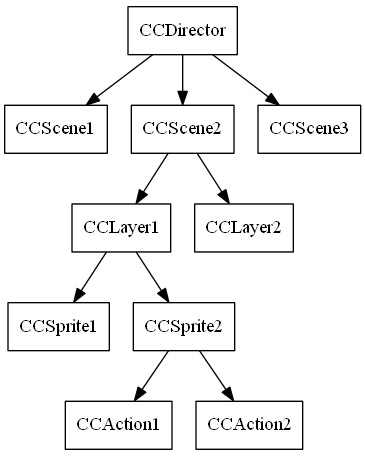

Note: This is a brief of cocos2d Basic Concepts on cocos2d-iphone.
There are some basic concepts introduced in this library that you will need to know when developing a cocos2d application:
A regular hierarchy chart may look like this:

A scene (implemented with the CCScene object) is more or less an independent piece of the app workflow. Some people may call them ¡°screens¡± or ¡°stages¡±. Your app can have many scenes, but only one of them is active at a given time.
A cocos2d CCScene is composed of one or more layers (implemented with the CCLayer object), all of them piled up. Layers give the scene an appearance and behavior; the normal use case is to just make instances of Scene with the layers that you want.
There is also a family of CCScene classes called transitions (implemented with the CCTransitionScene object) which allow you to make transitions between two scenes (fade out/in, slide from a side, etc).
Since scenes are subclasses of CCNode, they can be transformed manually or by using actions. See Actions for more detail about actions.
The CCDirector is the component which takes care of going back and forth between scenes.
The CCDirector is a shared (singleton) object. It knows which scene is currently active, and it handles a stack of scenes to allow things like ¡°scene calls¡± (pausing a Scene and putting it on hold while another enters, and then returning to the original). The CCDirector is the one who will actually change the CCScene, after a CCLayer has asked for push, replacement or end of the current scene.
A CCLayer has a size of the whole drawable area, and knows how to draw itself. It can be semi transparent (having holes and/or partial transparency in some/all places), allowing to see other layers behind it. Layers are the ones defining appearance and behavior, so most of your programming time will be spent coding CCLayer subclasses that do what you need.
A cocos2d' sprite is like any other computer sprite. It is a 2D image that can be moved, rotated, scaled, animated, etc.
Sprites (implemented using the CCSprite class) can have other sprites as children. When a parent is transformed, all its children are transformed as well.
Since sprites are subclass of CCNode, they can be transformed manually or by using actions. See Actions for more detail about actions.
Actions are like orders given to any CCNode object. These actions usually modify some of the object's attributes like position, rotation, scale, etc. If these attributes are modified during a period of time, they are CCIntervalAction actions, otherwise they are CCInstantAction actions.
For example, the CCMoveBy action modifies the position property during a period of time, hence, it is a subclass of CCIntervalAction.
Example:
sprite->runAction(CCMoveBy::actionWithDuration(2, ccp(50,10)));